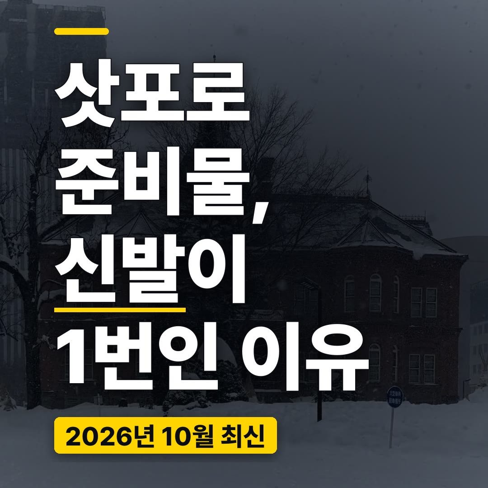
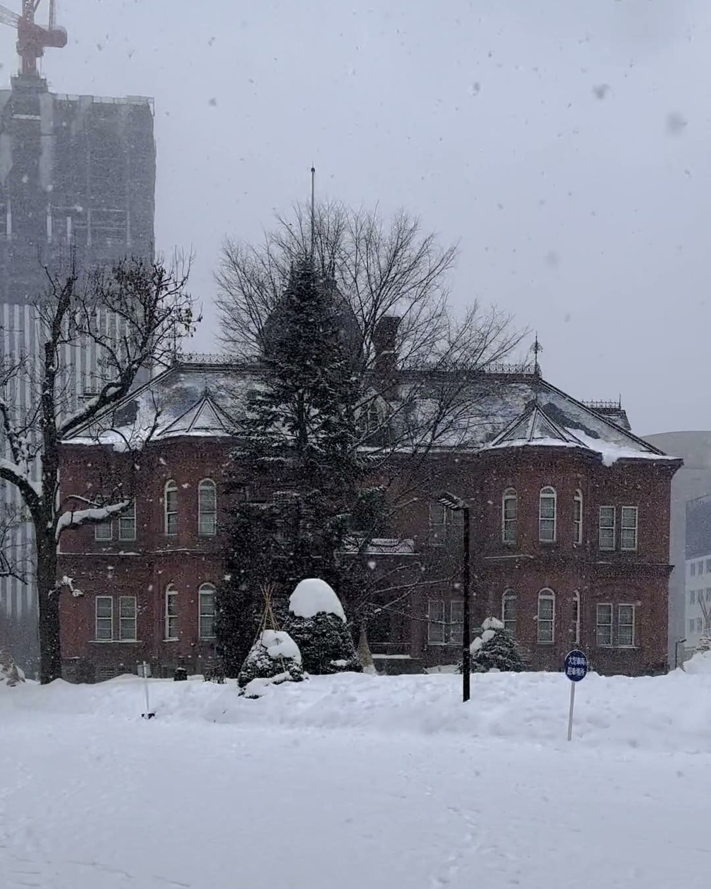
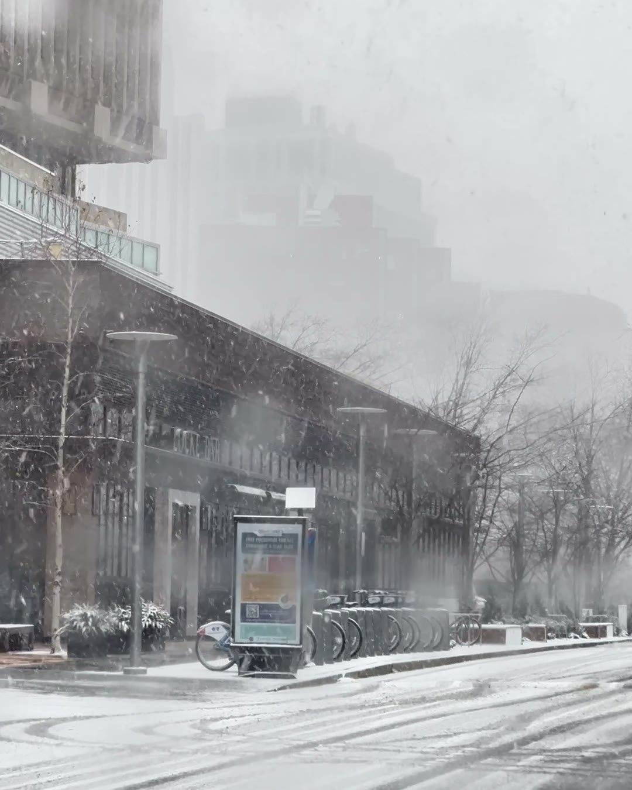
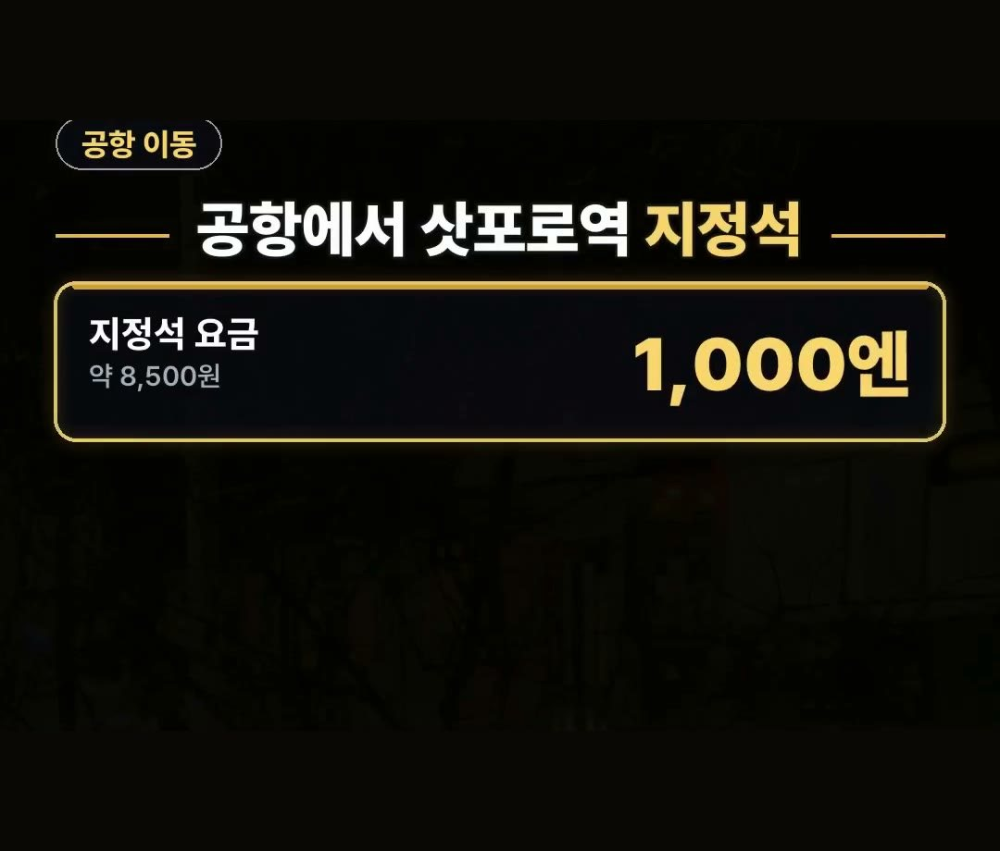
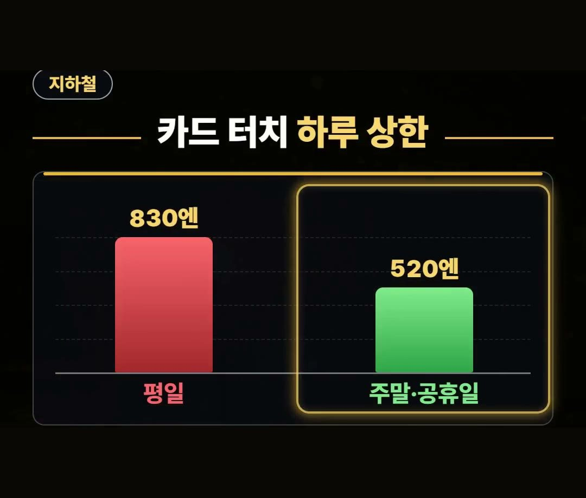
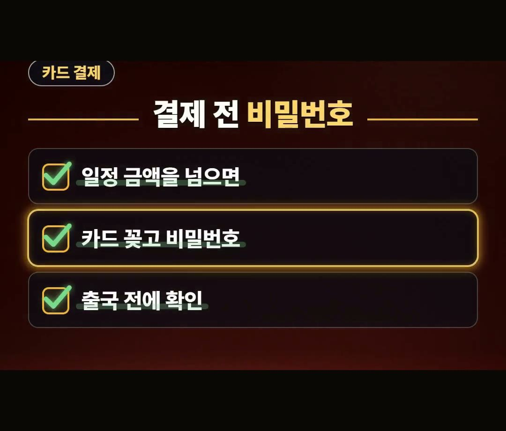
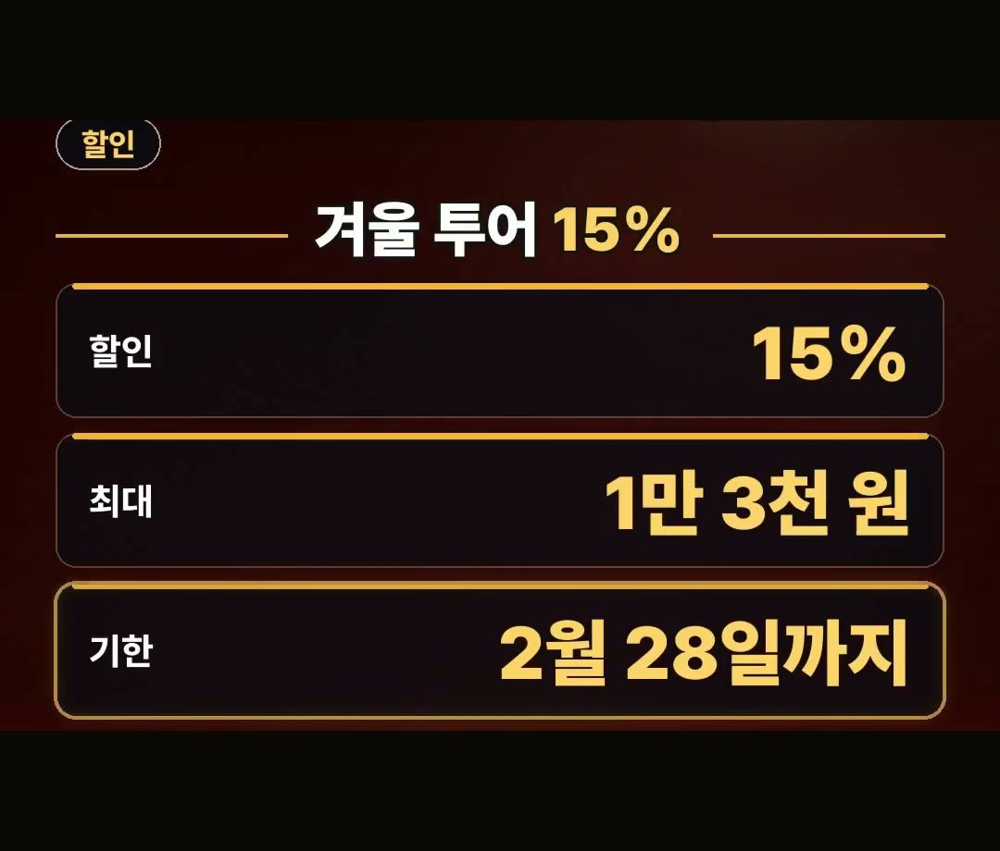

삿포로 여행 준비물, 신발이 1번인 이유와 카드 비밀번호
※ 이 글에는 제휴 링크가 포함되어 있으며, 링크를 통해 예약·구매하시면 일정 수수료를 받을 수 있습니다. (가격은 같습니다)
※ 이 포스팅은 쿠팡 파트너스 활동의 일환으로, 이에 따른 일정액의 수수료를 제공받습니다.
삿포로 여행 준비물은 딱 5가지만 기억하면 됩니다.
미끄럼에 강한 신발, 공항에서 삿포로역까지 가는 지정석, 지하철 카드 터치 하루 상한, 카드 비밀번호, 비짓재팬웹 가족 등록이에요.
2026년 10월 기준으로 정리했으니, 출발 전에 무엇부터 확인할지 순서가 잡힐 거예요.
안녕하세요, 돈 아끼는 연구소 아낌 소장이에요.
2025년 11월부터 2026년 3월까지 삿포로 눈길 낙상 구급 이송이 2,060명(삿포로시 소방국 속보치)이었다는 점, 그리고 어른 신용카드 터치 기준 지하철 하루 상한이 평일 830엔·주말과 공휴일 520엔이라는 점을 기억하세요! 😊

삿포로 여행 준비물 리스트, 1번은 신발
짐을 싸기 전에 가장 먼저 적어 둘 것은 신발이에요.
삿포로시 소방국 속보치로 2025년 11월부터 2026년 3월까지 눈길 낙상으로 구급 이송된 사람이 2,060명이었어요.

눈이 쌓인 도시를 걷는 일정이라면 숙소나 투어만큼 발밑도 챙겨야 한다는 뜻으로 읽혀요.
그래서 삿포로 여행 준비물 리스트의 1번은 미끄럼에 강한 신발입니다.
여행 중에 넘어지면 일정을 이어 가기 어려우니, 옷이나 소품보다 먼저 확인해 보세요.

삿포로 여행 준비물 10월 기준, 공항에서 삿포로역까지
신치토세공항에 내리면 삿포로역까지는 쾌속 에어포트를 타고 이동해요.
이 글의 요금과 정보는 2026년 10월 기준으로 정리했어요.
- 소요 시간: 빠르면 30분대
- 지정석: 1,000엔(약 8,500원)을 더 내요
지정석은 기본 요금에 1,000엔을 더 내는 방식이에요.
캐리어를 끌고 도착한 날이라면 이 금액을 쓸지 미리 정해 두면 역에서 망설이는 시간이 줄어요.
정해 두는 것까지가 이 항목의 준비물이에요.

삿포로 지하철은 카드 터치, 하루 상한 확인
삿포로 지하철은 어른이 신용카드를 터치해서 탈 때 하루 상한이 정해져 있어요.
평일과 주말·공휴일의 금액이 다르니 일정을 짤 때 요일을 같이 보세요.
- 평일: 830엔
- 주말·공휴일: 520엔
(어른, 신용카드 터치 기준)
주말과 공휴일에는 520엔까지만 나간다는 점이 포인트예요.
지하철을 여러 번 탈 계획이라면 요일별 상한을 알고 가는 편이 좋겠죠.

삿포로 여행 준비물 체크리스트, 카드 비밀번호와 가족 등록
터치 결제가 편해 보여도 일정 금액을 넘으면 카드를 꽂고 비밀번호를 넣어야 해요.
현지에서 비밀번호가 기억나지 않으면 곤란하니 출국 전에 꼭 확인하세요.
체크리스트에 이렇게 적어 두면 편해요.
- 일정 금액을 넘으면 카드를 꽂고 비밀번호 입력
- 비밀번호는 출국 전에 확인

입국 준비도 하나 있어요.
비짓재팬웹에는 함께 입국하는 가족을 최대 10명까지 등록할 수 있어요.
가족이나 일행이 같이 간다면 이 기능을 알아 두세요.
데이터는 이심으로 미리 챙겨 두면 도착해서 바로 쓸 수 있어요.
겨울 투어·활동 15% 할인 코드
클룩에서 일본·한국 겨울 투어 및 활동에 쓸 수 있는 15% 할인 코드가 있어요.
기한은 2월 28일까지이고, 할인은 최대 1만 3천 원까지예요.
- 할인: 15%
- 최대: 1만 3천 원
- 기한: 2월 28일까지
최대 금액이 정해져 있으니 예약하기 전에 기한과 조건을 한 번 더 살펴보세요.
숙소와 투어 링크는 글 아래에 모아 두었어요.

정리
- 삿포로 여행 준비물 1번은 미끄럼에 강한 신발이에요. 2025년 11월부터 2026년 3월까지 눈길 낙상 구급 이송이 2,060명(삿포로시 소방국 속보치)이었어요.
- 공항 쾌속 에어포트 지정석은 1,000엔(약 8,500원)을 더 내고, 삿포로 지하철 카드 터치 하루 상한은 어른 기준 평일 830엔·주말과 공휴일 520엔이에요.
- 터치 결제도 일정 금액을 넘으면 카드 비밀번호가 필요하니 출국 전에 확인하고, 비짓재팬웹에는 가족을 최대 10명까지 등록할 수 있어요.
예약 링크는 아래에 모아 두었어요.
지금 쓸 수 있는 여행사 할인
- 📶 해외 데이터는 이심으로 미리 · 마이리얼트립 마이심 「일본 50% 1,400원~」 · 2개 이상 추가 할인 (마이심 화면 표시 기준 · 10/5 확인 · 값은 바뀔 수 있음)
- 🎟 클룩 일본·한국 겨울 투어 15% 할인 코드 「TNA2026JPKRWINTER15OFF」 (최대 1만 3천 원 · 2월 28일까지)
- 🎟 클룩 일본 어트랙션 5% 할인 코드 「일본어트랙션5%」 (최소 구매 금액 없음 · 최대 4천 원 · 일부 상품 제외 · 쿠폰 취소 시 재발행 불가 · 예산 소진 시 조기 종료 · 12월 31일까지)
※ 여행사 사정으로 조건이 바뀌거나 일찍 끝날 수 있어요. 예약 전에 여행사 화면에서 한 번 더 확인하세요. (2026-10-05 확인)
📘 무료 여행 가이드 전자책 모음 보기 (오사카 · 후쿠오카 · 타이베이 · 도쿄 · 일본겨울) ›
📌 2026년 10월 기준 정보예요. 가격은 환율·시기에 따라 달라질 수 있어요.
사진·영상: Pexels (Nelemson G, Rolan Muradov, Sahan Hansaka Liyanage, Tatyana Iva, Teju)